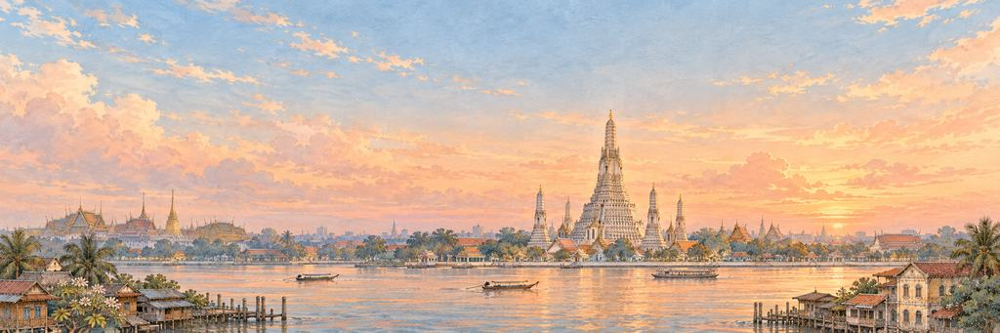
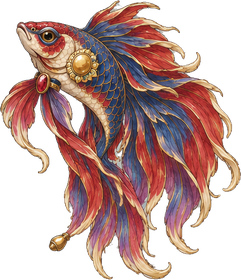
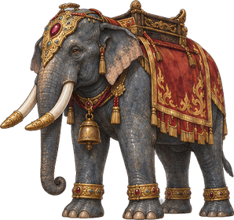

Bangkok paper plane game
Watch the sun go down behind the Temple of Dawn, across the Chao Phraya.
Low roofs along the river. Get past the fighting fish, then the war elephant.
A city of canals
Bangkok became the capital of Siam in 1782, when King Rama I built a new city on the east bank of the Chao Phraya river. Visitors called it the Venice of the East for its many canals. Its full ceremonial name, 168 letters long, is the longest place name in the world, so Thai people just say Krung Thep.
“I'd try to say the whole name in one breath.”
The landmarkThe Temple of Dawn
Wat Arun, the Temple of Dawn, stands on the west bank of the Chao Phraya. Its central tower was raised in the early 1800s to about 70 metres. Its sides are covered in flowers made from pieces of coloured porcelain, much of it brought on Chinese trading ships.
Neighbourhoods
Bangkok is split into 50 districts, called khet. The old royal heart is Rattanakosin Island, on a bend of the river. It is not a natural island: canals were dug on its east side as a moat around the walled city. Work on the Grand Palace began there on 6 May 1782, and the temple of Wat Pho stands close by. In Chinatown, street food stalls fill Yaowarat Road after dark. Further east lies Lumphini Park, about 57 hectares of green space. King Rama VI gave the land in 1925.
The river
The Chao Phraya runs about 372 km from the north of Thailand, through Bangkok and into the Gulf of Thailand. Its west bank is Thonburi, which was the capital from 1767 to 1782, under King Taksin. In 1972 Thonburi and the old city on the east bank were joined into one city. A small ferry from Tha Tien pier, next to Wat Pho, crosses to Wat Arun in about two minutes.
The skyline
King Power Mahanakhon, 314 metres tall, is known for its pixelated look: a ribbon of what seem to be missing blocks winds around its sides. In 2016 it became the tallest building in Thailand. In 2018 it lost the record to Magnolias Waterfront Residences, in the ICONSIAM complex, at about 317 metres. In the old city, more than 300 steps climb the Golden Mount, a man-made hill at Wat Saket.
When to see it
Come in the cooler, drier months from November to February. At sunset, the best view of Wat Arun is from the east bank, near Tha Tien pier. After dark, the temple glows with golden lights.
Who keeps the wish in Bangkok.
An Elite wakes first; the Boss guards the wish itself. Hit their weak points for a BONK!, land the last blow for a KO!, and each one grins and takes a bow.
-
The Elite

The Fighting Fish
Flares at its own reflection · Keeper of the canals
Siamese fighting fish, called plakat in Thai, come from the rice paddies and canals of Thailand. A male spreads his fins wide to look bigger than any rival, even his own reflection. For generations Thai breeders have raised them in brighter colours, and in 2019 Thailand named the fighting fish its national aquatic animal.
The fish flares every fin at once and glares at its reflection in the plane. The fish spins round in a swirl of red fins and flares again. The fish folds its fins, gives a small bow and swims off to sulk.
“I'd give it a mirror. Someone to argue with.”
-
The Boss

The War Elephant
Rings its bell before it sprays · Keeper of the Chao Phraya
For centuries the kings of Siam rode into battle on elephants. The story goes that in 1593 King Naresuan won a duel on elephant-back against the Burmese crown prince, and Thailand still marks the day as Armed Forces Day. The Asian elephant is Thailand's national animal.
The elephant raises its trunk, and the gold bell at its neck rings across the river. The elephant shakes its ears, and its bell clangs. The elephant kneels, lowers its trunk and rings its bell once, softly.
“I'd ride up top and ring the bell myself.”
Bangkok cleared. The temple's tower glittered as the sun went down.
- The fish flared at me the whole time. I think it was flaring at its own reflection.
- The elephant sprayed river water at me. It rang its bell first, which was kind.
The plane reaches Bangkok from Beijing.